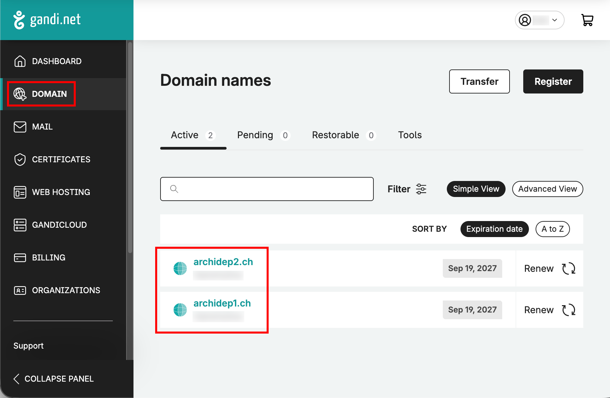
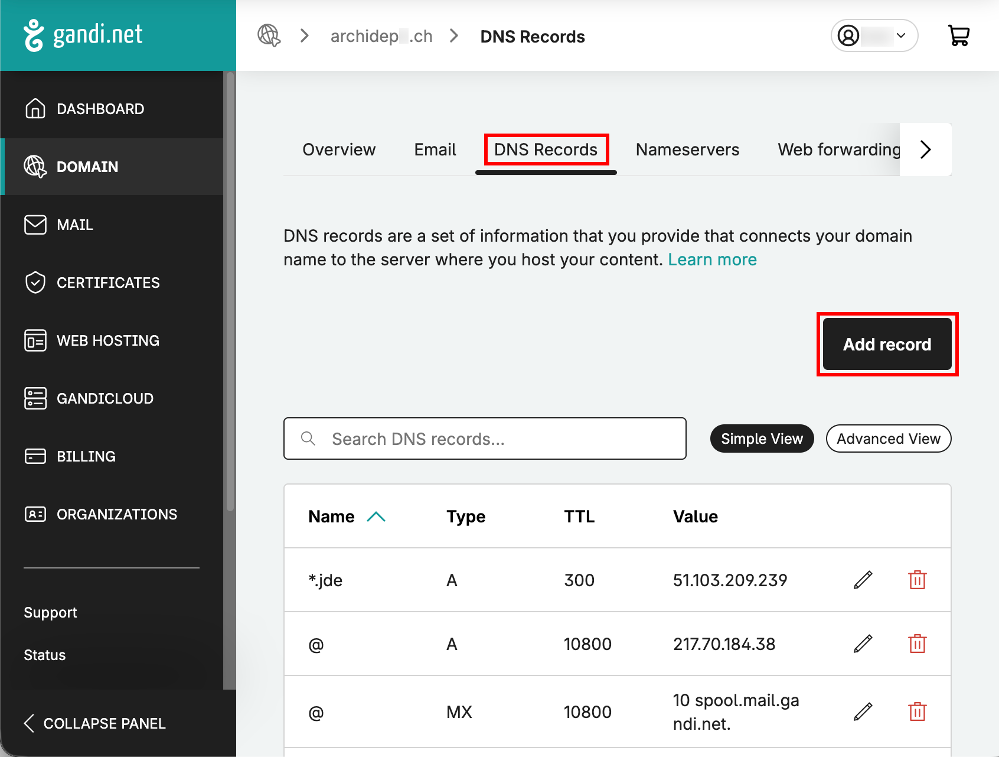
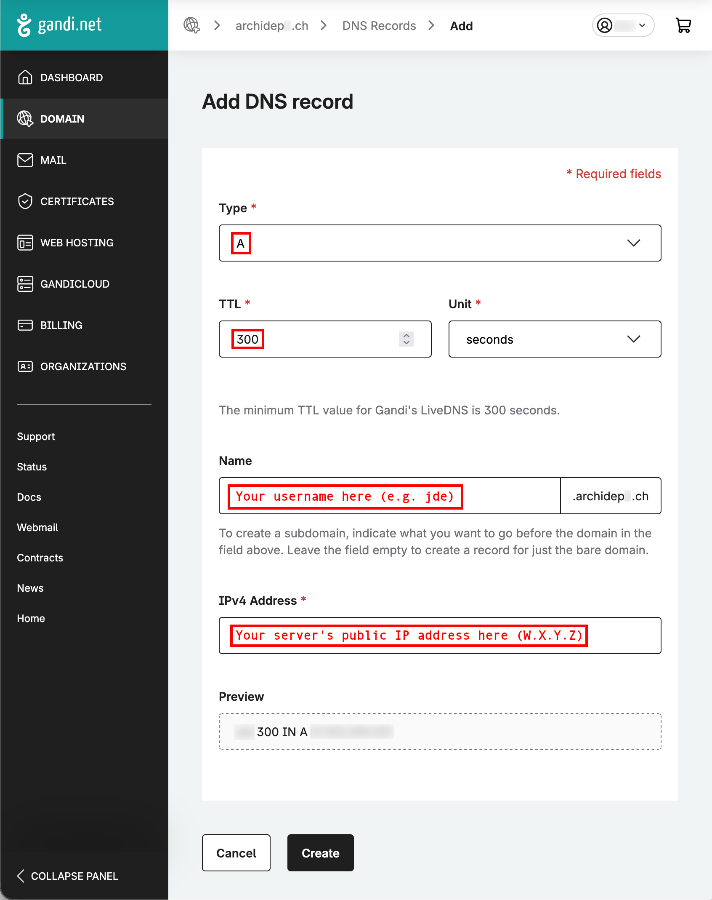
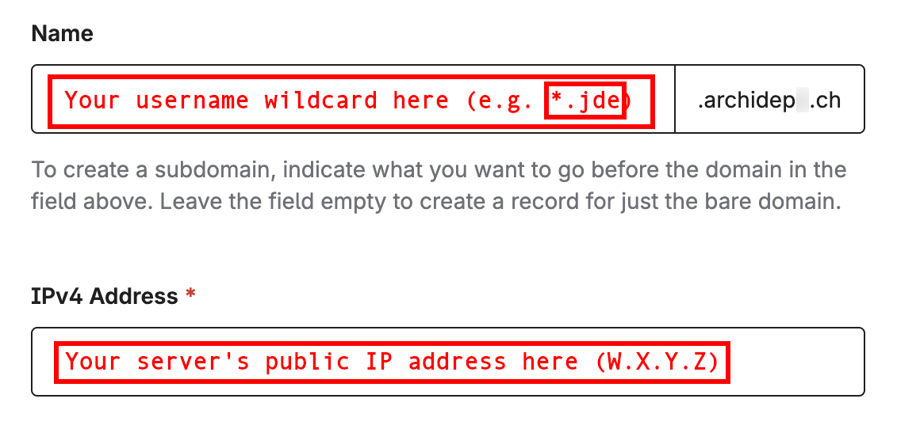
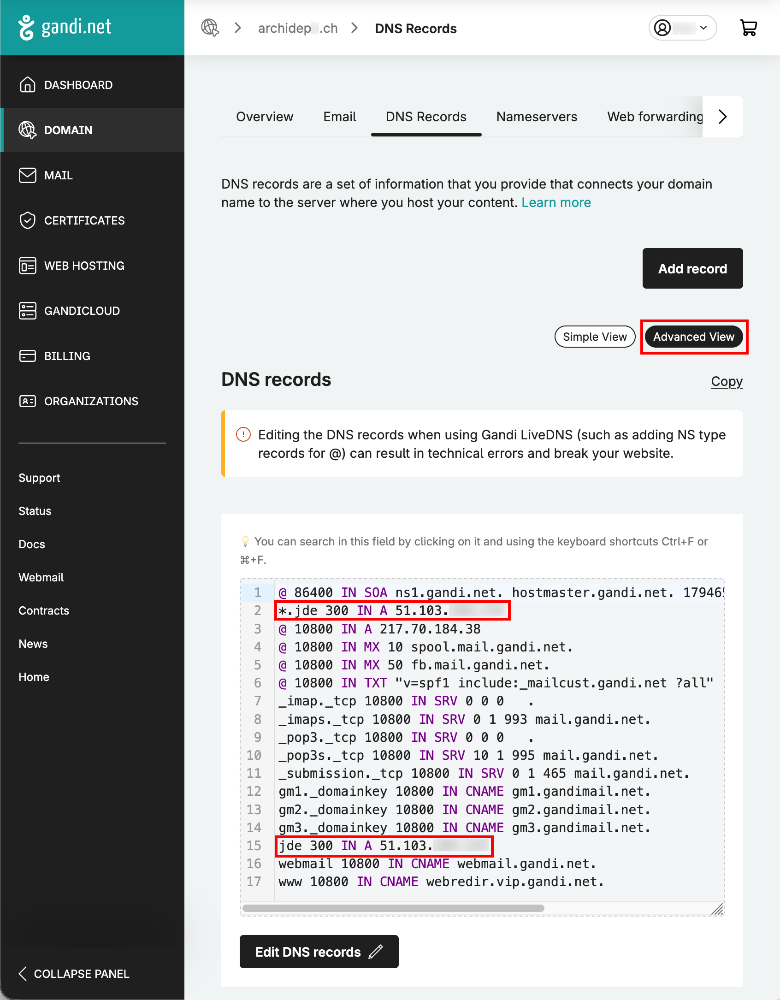
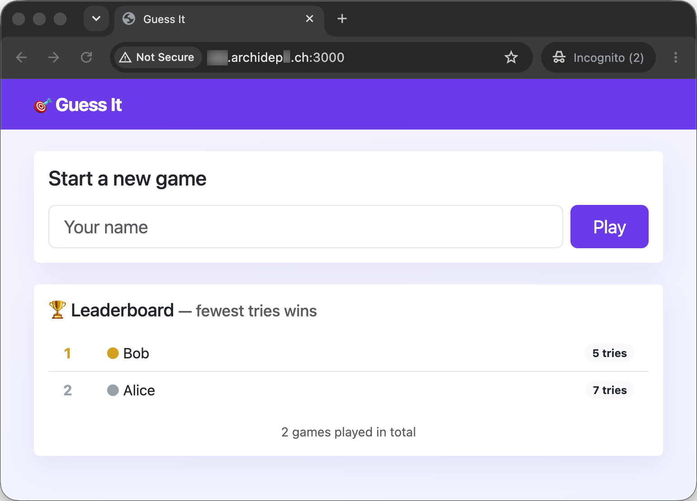

You only need your favorite browser for this exercise, as long as you have completed the previous exercises and Guess It is running on your server.
Domain name configuration
The goal of this exercise is to set up a real domain name for your application.
On this page
Table of contents
 Legend
Legend
Parts of this exercise are annotated with the following icons:
-
 A task you MUST perform to complete the exercise
A task you MUST perform to complete the exercise
-
 Optional step that you may perform to make sure that
everything is working correctly, or to set up additional tools that are not required but can
help you, or optional extra exercises to explore the topic further
Optional step that you may perform to make sure that
everything is working correctly, or to set up additional tools that are not required but can
help you, or optional extra exercises to explore the topic further
-
 Advanced tips on how to go further (or
challenges!)
Advanced tips on how to go further (or
challenges!)
 The end of the exercise
The end of the exercise-
 The architecture of the software you ran or
deployed during this exercise
The architecture of the software you ran or
deployed during this exercise
-
 Troubleshooting tips: how to fix common problems you might
encounter
Troubleshooting tips: how to fix common problems you might
encounter
Requirements
Make sure you have completed the previous exercise.
Find your subdomain
In this exercise, you will configure actual subdomains in the worldwide DNS system to point to your server.
You must use the subdomain that has been assigned to you for this course: the
Hostname shown on your cloud server’s details card, on this page if you are
logged in, or on the dashboard. Make a note of it. For example, if your
hostname is jde.archidep2.ch:
archidep2.chis the domain you will select in Gandi.net.jdeis the name you will give to your DNS records.
Configure a DNS zone with Gandi.net
-
By now, you should have received an email from Gandi.net on your
@heig-vd.chaddress, inviting you to join the course’s organization. Accept the invitation, and create a Gandi.net account when asked if you do not have one yet. If you cannot find the email, ask the teacher. -
Connect to Gandi.net with your account.
-
Go under the “Domain” tab in the left menu and select the domain of the hostname you noted above.

-
Go under the “DNS Records” tab in the domain’s top menu. Gandi.net shows the records of the domain’s DNS zone in a table:

-
Add two new
Arecords with the “Add record” button, to map subdomains to your server’s public IP address:- Assuming your personal subdomain for the course is
jde.archidep2.ch, usejdeas the name of the DNS record. - Then, create a wildcard subdomain using
*.jdeas the name of the DNS record, and the same IP address. This will direct any second-level subdomain likefoo.jde.archidep2.chto your server.
For both records, set the TTL to 300 seconds (5 minutes), the shortest Gandi.net allows, instead of its default of 10800 seconds (3 hours). If you make a mistake in a record, you will then wait at most 5 minutes for the corrected one to be seen.

Create the second wildcard record in the same way. Only the name changes:

- Assuming your personal subdomain for the course is
Assuming your server’s IP address is W.X.Y.Z and your username is jde,
the domain’s zone file should now contain the following DNS records (among
others):
*.jde 300 IN A W.X.Y.Z
jde 300 IN A W.X.Y.ZYou can see the zone file itself in Gandi.net’s “Advanced View”. Look for your own lines in it, with your owner username and your server’s public IP address:

Access the domain name
Once you have configured it correctly, you (and everybody else) can reach Guess
It at http://jde.archidep2.ch:3000 in a browser, instead of
http://W.X.Y.Z:3000. It is the same application, still listening on port 3000:
only the name in the address has changed.

You might have to wait a few minutes for the change to take effect, especially if you make a mistake in configuring the DNS record and then fix it. This is because DNS records are cached for a time (the TTL you configured), by all intermediaries and also by your machine.
Optional: check the DNS resolution yourself
You can ask the DNS for the IP address of your domain name yourself, without opening Guess It.
The simplest is an online tool such as Google’s Dig: enter your
domain name, and it shows the A record of that name, with your server’s public
IP address. It asks the DNS from Google’s servers rather than from your machine,
so its answer does not depend on what your machine has cached, which is useful
after you have fixed a mistake in a record.
On the command line, the dig command asks a DNS server and prints its answer:
$> dig jde.archidep2.ch
...
;; ANSWER SECTION:
jde.archidep2.ch. 300 IN A W.X.Y.Z
...The answer section must contain your server’s public IP address. It is the record you added in Gandi.net, in the same format as in the zone file above. The number after the name is how many seconds the answer may still be cached: 300 at most, the TTL of your record, and less if it was already in a cache.
A name under your wildcard record, such as foo.jde.archidep2.ch, must give the
same address.
If your shell says dig: command not found, run it on your server, over SSH.
You can also use ping, as you did to find Google’s IP address in Make TCP
connections. It prints the address the name resolves to on its first
line:
$> ping -c 1 jde.archidep2.ch
PING jde.archidep2.ch (W.X.Y.Z) 56(84) bytes of data.What follows does not matter here. If your server does not answer ping, ping
reports 100% packet loss after a few seconds: the name still resolved to your
server’s address, which is what you are checking.
What have I done?
You have given your server a name. Anyone on the Internet can now reach Guess It
at http://jde.archidep2.ch:3000 (for example), without knowing your server’s
IP address.
The name works because you added records to a DNS zone: the part of the domain name system that one manager is responsible for. The course manages the zone of its domain at Gandi.net, and gave you access to add your own records to it, as a company does with the subdomains of its own domain.
An A record maps a name to an IPv4 address, and nothing else. A browser first
asks the DNS for the address of the name you typed, then connects to that
address exactly as if you had typed the address yourself. The port is not part
of the DNS: :3000 is still needed, and the connection still reaches the same
process listening on that port.
Your wildcard record, *.jde, maps every name under jde.archidep2.ch to the
same address, so that a name such as foo.jde.archidep2.ch needs no record of
its own.
An answer from the DNS is kept in caches, on your machine and on the DNS servers in between, for as long as the record’s TTL allows. That is why a corrected record can take minutes to work: the old answer is still served from a cache. A name that was never looked up is in no cache, so it works straight away.
Several problems from the list of improvements to the basic deployment are still unsolved. One of them is that the address still needs a port. Your server will host several sites, each under a name of its own, and they cannot all listen on the same port, since only one process can listen on a given port. The DNS does not solve this: it maps names to addresses, never to ports. Something more will be needed.
Architecture
This is a simplified architecture of the main running processes and communication flow at the end of this exercise. The only thing that has changed compared to the previous exercise is that you are now using a domain name instead of an IP address to reach your application. Step through the diagram to see what happens when a browser requests the home page.
In this diagram, a browser reaches Guess It by your domain name, jde.archidep2.ch, instead of your server’s IP address. Guess It talks to PostgreSQL. systemd, the init process, started both when the server booted.
systemd, the init process, has started PostgreSQL and then Guess It on your server. You have added an A record for jde.archidep2.ch to the DNS zone of archidep2.ch, pointing to your server’s public IP address.
Someone opens a browser on their computer.
They type your domain name and port into the browser. The browser looks up jde.archidep2.ch in the DNS, which answers with your server’s public IP address, from the A record you added.
The browser connects to port 3000 at your server’s public IP address, where Guess It is listening, as when the IP address was typed.
The browser sends an HTTP request for the home page over the connection, and waits for the answer.
Guess It works: Node.js runs its JavaScript code, which needs the leaderboard from the database.
Guess It connects to PostgreSQL on port 5432, with the database URL systemd gave it from its configuration file.
Guess It sends its query over the connection.
PostgreSQL works, running the query, while Guess It waits for the answer.
The rows of the leaderboard travel back to Guess It.
Guess It works again, building the HTML page from the rows.
The page travels back over the connection to the browser, with its stylesheets and scripts.
The browser works, displaying the page.
Troubleshooting
Here’s a few tips about some problems you may encounter during this exercise.
I used the wrong IP address and then fixed it, but it doesn’t work
DNS records are cached for a time (the TTL you configured). Your machine has this cache, and all intermediary DNS servers also have it. When you change an existing DNS entry that you have already consulted in your browser, you have to wait for the TTL to expire on your machine and all intermediaries before the changes take effect.
In the meantime, you can simply create a new DNS entry. For example, if you
created jde.archidep2.ch, you can create jde2.archidep2.ch. This new entry
will work immediately. The old one you fixed will work eventually once the cache
has cleared.